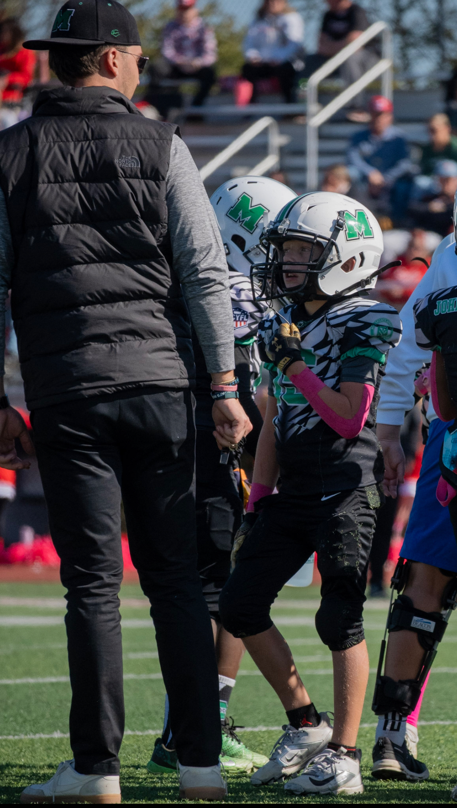

Mason Youth Football Coach

I help coach a 3rd grade youth football team and I’m currently in my fourth year coaching. I love building fundamentals in early confidence, communication, and a team-first mindset. I am passionate about taking my love for the game of football and passing it on to a younger generation.
- Practice planning and drills that keep kids engaged
- Teaching technique and safety the right way
- Helping players grow week-to-week and learn what it means to be a respectful young man (it's bigger than football)